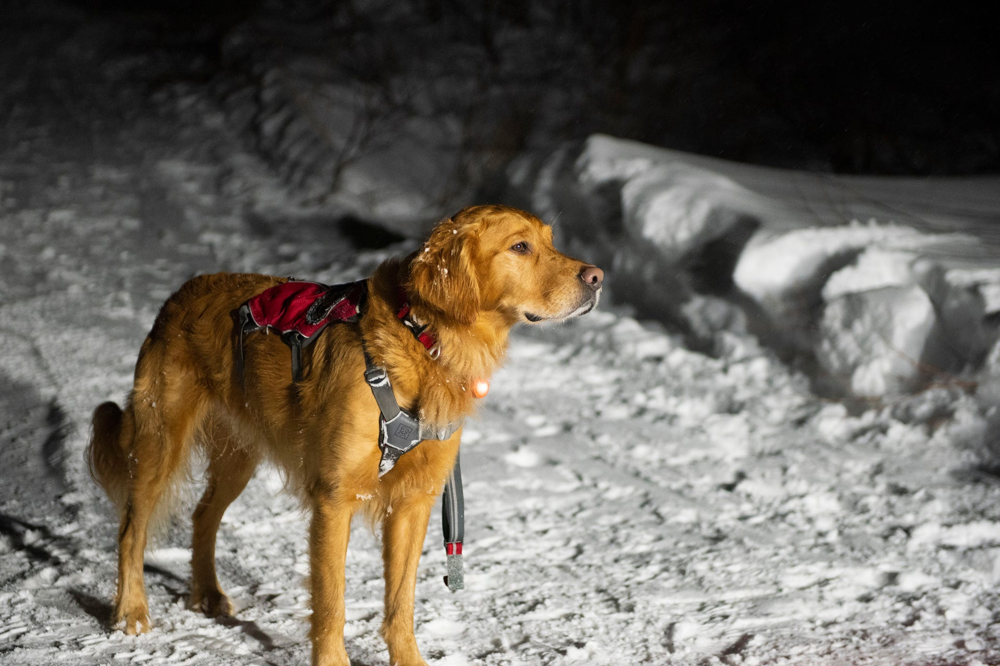
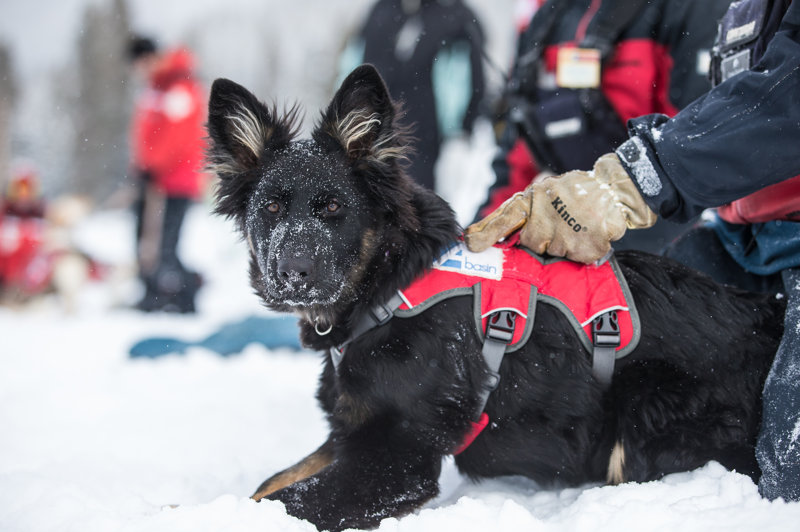

There is no good answer for how to survive an avalanche.
The most effective solution is prevention. Consult the forecast, recognize the signs, and play it safe. But part of what makes avalanches so terrifying – besides that they reach speeds of 60 mph, besides that the impact alone can be fatal and besides the thought of suffocating under the crushing weight of a massive pile of snow – is their unpredictability. So while even the most savvy skier or snowboarder may take precautions, anyone can experience an unlucky day.
But if that day comes, the best way to survive may be with the help of an avalanche-rescue dog.
The Wasatch Backcountry Rescue (WBR) International Dog School prepares Avalanche Rescue K-9 teams for those moments. USA TODAY Sports got an exclusive look in January at the semi-annual, four-day program that brings in dogs and their handlers from around the world to educate them on how to respond when they get the call no ski patroller wants to hear.
“Honestly,” said Heather Dent, a dog-school student and handler of a small Australian cattle dog, “I hope to never deploy her. That is the goal. I never want to work my dog for real, but if I have to we’ll be good. She’s ready.”
Over the past decade, an average of 27 people have died in avalanches each year. While WBR does not track the number of rescues its graduates are responsible for, the school that was founded in 1976 has trained hundreds of teams, who then spread the live-saving knowledge across the globe.
Once a victim is stuck in an avalanche, the clock moves fast. WBR president Tracy Christiansen said unless there is an air pocket, a person's chance of survival drops significantly after 3-5 minutes.
 “Miracles have happened when people have survived 40 minutes,” WBR president Tracy Christiansen said. “I’ve heard stories of up to 20 hours where they’ve been in air pockets and been able to survive. So those things do happen. That’s why we always believe in going for the live find.”
Christiansen urges visitors to “always be searchable,” never travel alone and always carry a tracking device. And if a victim can’t perform a self-rescue and doesn’t have some form of location technology, “the dogs are their only chance," he said.
Dogs are selected by ski patrollers as puppies and begin training when they are a few months old. From the moment they meet, dog and handler are inseparable.